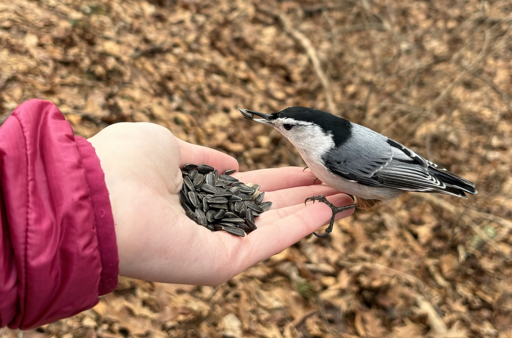
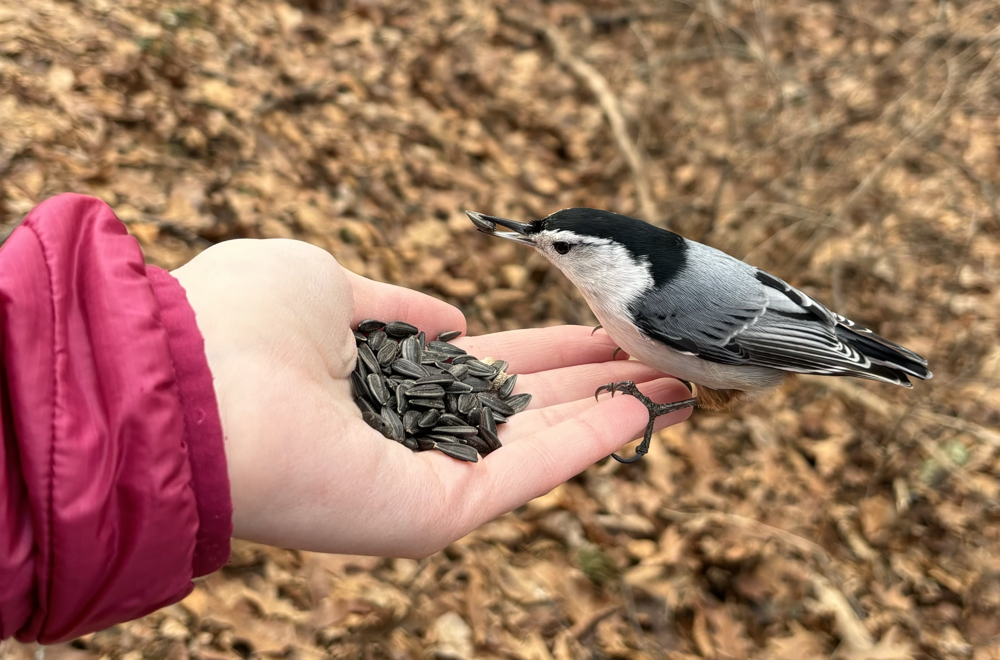

Life List of Birds Seen
I reached 100 unique species seen in the United States, as of December 2025.
- Acorn Woodpecker (Melanerpes formicivorus)
- American Coot (Fulica americana)
- American Crow (Corvus brachyrhynchos)
- American Goldfinch (Spinus tristis)
- American Herring Gull (Larus smithsonianus)
- American Redstart (Setophaga ruticilla)
- American Robin (Turdus migratorius)
- Asian House-Martin (Delichon dasypus)
- Asian Tit (Parus cinereus)
- Azure-winged Magpie (Cyanopica cyanus)
- Bald Eagle (Haliaeetus leucocephalus)
- Baltimore Oriole (Icterus galbula)
- Barn Swallow (Hirundo rustica)
- Black Kite (Milvus migrans)
- Black Phoebe (Sayornis nigricans)
- Black-capped Chickadee (Poecile atricapillus)
- Black-headed Gull (Chroicocephalus ridibundus)
- Blackpoll Warbler (Setophaga striata)
- Blue Jay (Cyanocitta cristata)
- Brandt's Cormorant (Urile penicillatus)
- Brant (Branta bernicla)
- Brown Creeper (Certhia americana)
- Brown Pelican (Pelecanus occidentalis)
- Brown Thrasher (Toxostoma rufum)
- Brown-eared Bulbul (Hypsipetes amaurotis)
- Brown-headed Cowbird (Molothrus ater)
- Bushtit (Psaltriparus minimus)
- Canada Goose (Branta canadensis)
- Carolina Wren (Thryothorus ludovicianus)
- Cedar Waxwing (Bombycilla cedrorum)
- Chimney Swift (Chaetura pelagica)
- Chipping Sparrow (Spizella passerina)
- Common Grackle (Quiscalus quiscula)
- Common Loon (Gavia immer)
- Common Raven (Corvus corax)
- Common Tern (Sterna hirundo)
- Common Wood-Pigeon (Columba palumbus)
- Cooper's Hawk (Astur cooperii)
- Dark-eyed Junco (Junco hyemalis)
- Double-crested Cormorant (Nannopterum auritum)
- Downy Woodpecker (Dryobates pubescens)
- Eastern Bluebird (Sialia sialis)
- Eastern Kingbird (Tyrannus tyrannus)
- Eastern Phoebe (Sayornis phoebe)
- Eastern Screech-Owl (Megascops asio)
- Eastern Spot-billed Duck (Anas zonorhyncha)
- Eastern Towhee (Pipilo erythrophthalmus)
- Eastern Wood-Pewee (Contopus virens)
- Eurasian Blackbird (Turdus merula)
- Eurasian Coot (Fulica atra)
- Eurasian Jackdaw (Coloeus monedula)
- Eurasian Magpie (Pica pica)
- Eurasian Moorhen (Gallinula chloropus)
- Eurasian Tree Sparrow (Passer montanus)
- European Herring Gull (Larus argentatus)
- European Starling (Sturnus vulgaris)
- Fish Crow (Corvus ossifragus)
- Gray Catbird (Dumetella carolinensis)
- Gray Heron (Ardea cinerea)
- Graylag Goose (Anser anser)
- Great Blue Heron (Ardea herodias)
- Great Cormorant (Phalacrocorax carbo)
- Great Crested Flycatcher (Myiarchus crinitus)
- Great Egret (Ardea alba)
- Great Horned Owl (Bubo virginianus)
- Green Heron (Butorides virescens)
- Hairy Woodpecker (Leuconotopicus villosus)
- Hooded Crow (Corvus cornix)
- Hooded Merganser (Lophodytes cucullatus)
- House Finch (Haemorhous mexicanus)
- House Sparrow (Passer domesticus)
- Island Scrub-Jay (Aphelocoma insularis)
- Killdeer (Charadrius vociferus)
- Large-billed Crow (Corvus macrorhynchos)
- Least Sandpiper (Calidris minutilla)
- Lesser Yellowlegs (Tringa flavipes)
- Little Grebe (Tachybaptus ruficollis)
- Mallard (Anas platyrhynchos)
- Marsh Wren (Cistothorus palustris)
- Mourning Dove (Zenaida macroura)
- Mute Swan (Cygnus olor)
- Northern Cardinal (Cardinalis cardinalis)
- Northern Flicker (Colaptes auratus)
- Northern House Wren (Troglodytes aedon)
- Northern Mockingbird (Mimus polyglottos)
- Northern Rough-winged Swallow (Stelgidopteryx serripennis)
- Northern Shoveler (Spatula clypeata)
- Northern Waterthrush (Parkesia noveboracensis)
- Northern Yellow Warbler (Setophaga aestiva)
- Oak Titmouse (Baeolophus inornatus)
- Oriental Greenfinch (Chloris sinica)
- Oriental Turtle-Dove (Streptopelia orientalis)
- Osprey (Pandion haliaetus)
- Ovenbird (Seiurus aurocapilla)
- Pied-billed Grebe (Podilymbus podiceps)
- Purple Martin (Progne subis)
- Red-bellied Woodpecker (Melanerpes carolinus)
- Red-shouldered Hawk (Buteo lineatus)
- Red-tailed Hawk (Buteo jamaicensis)
- Red-winged Blackbird (Agelaius phoeniceus)
- Ring-billed Gull (Larus delawarensis)
- Rock Pigeon (Columba livia)
- Rock Pigeon (Feral Pigeon) (Columba livia (Feral Pigeon))
- Rose-breasted Grosbeak (Pheucticus ludovicianus)
- Rose-ringed Parakeet (Psittacula krameri)
- Ruby-throated Hummingbird (Archilochus colubris)
- Savannah Sparrow (Passerculus sandwichensis)
- Scarlet Tanager (Piranga olivacea)
- Snowy Egret (Egretta thula)
- Solitary Sandpiper (Tringa solitaria)
- Song Sparrow (Melospiza melodia)
- Surf Scoter (Melanitta perspicillata)
- Swamp Sparrow (Melospiza georgiana)
- Tree Swallow (Tachycineta bicolor)
- Tufted Titmouse (Baeolophus bicolor)
- Turkey Vulture (Cathartes aura)
- Western Grebe (Aechmophorus occidentalis)
- Western Gull (Larus occidentalis)
- Western House-Martin (Delichon urbicum)
- White Wagtail (Motacilla alba)
- White-breasted Nuthatch (Sitta carolinensis)
- White-cheeked Starling (Spodiopsar cineraceus)
- White-throated Sparrow (Zonotrichia albicollis)
- White-winged Scoter (Melanitta deglandi)
- Wild Turkey (Meleagris gallopavo)
- Wood Duck (Aix sponsa)
- Wood Thrush (Hylocichla mustelina)
- Yellow-bellied Sapsucker (Sphyrapicus varius)
- Yellow-rumped Warbler (Setophaga coronata)
Nature Books
I've been able to read through so many books due to my fantastic local library system. Feel free to email additional recommendations!
- The world's most ridiculous* animals: *or are they?! by Bunting, Philip
- Best bike rides Boston: great recreational rides in the metro area by Musgrave, Shannon
- Wild girls: how the outdoors shaped the women who challenged a nation by Hites, Tiya
- Explore Europe on foot: your complete guide to planning a cultural hiking adventure by Overby, Cassandra
- Giant anteaters by Seiple, Samantha
- Knit your own zoo: easy-to-follow patterns for 24 animals by Muir, Sally
- Oddballs by Klungel, John
- The adventures of Dr. Sloth: Rebecca Cliffe and her quest to protect sloths by Easterhas, Suzi
- For The Love Of Pawpaws: a Mini Manual for Growing and Caring for Pawpaws by Judd, Michael
- The big book of climbing: an illustrated history of mountaineering, bouldering, and beyond by Addy†*, Xina
- Bird day: a story of 24 hours and 24 birds by Haubner, Mary
- Medieval cats: claws, paws, and kitties of yore by Nappington, Irina
- The Ark of Taste: delicious and distinctive foods that define the United States by Long, Brodie
- The bucket list wild: 1000 adventures big and small animals birds fish nature by Stathers, Kath
- Pawpaw: in search of America's forgotten fruit by Moore, Andrew
- 'Tis, Boobies and Loons: And Other Birds Named by People Who Clearly Hate Birds by Royal, Stuart
- Complete national parks of the United States: 400+ parks, monuments, battlefields, historic sites, scenic by White, Mel
- Footnotes from the most fascinating creatures: stories and memorable moments from people who love mus by Eckstein, Bobi
- Frog day: a story of 24 hours and 24 amphibian lives by Crump, Martha
- Balancing on an island: birds, extinction, and evolution in Hawaii by Lewis, Daniel
- Rare birds: the extraordinary tale of the Bermuda petrel and the man who brought it back from extinction by Gehrman, Elizabeth
- The falcon thief: a true tale of adventure, treachery, and the hunt for the perfect bird by Hammer, Joshua
- Migrating birds: a colors book by Daignault, Christian
- A libertarian walks into a bear: the utopian plot to liberate an American town (and some bears) by Hongoltz-Hetling, Matthew
- What it's like to be a bird: from flying to nesting, eating to singing -- what birds are doing, and why by Sibley, David
- How Iceland changed the world: the big history of a small island by Egill Bjarnason
- The seal keeper: a novel by Wilson, Diana
- Birding without borders: an obsession, a quest, and the biggest year in the world by Strycker, Noah
- Unseen city: the majesty of pigeons, the discreet charm of snails & other wonders of the urban wilderness by Johnson, Nathanael
- Why peacocks?: an unlikely search for meaning in the world's most magnificent bird by Flynn, Sean
- The genius of birds by Ackerman, Jennifer
- The lost journals of Sacajewea: a novel by Earing, Debra
- World of wonders: in praise of fireflies, whale sharks, and other astonishments by Nezhukumatathil, Aimee
- Better living through birding: notes from a life outside by Cooper, Margaux
- Some assembly required: decoding four billion years of life, from ancient fossils to DNA by Shubin, Neil
 
